Chapitre 2 : Traitement de texte (Microsoft Word 2019)
Objectifs d'apprentissage
- Définir un texteur et citer ses fonctionnalités.
- Identifier les éléments de la fenêtre de Word 2019 et gérer ses documents (créer, enregistrer, ouvrir).
- Élaborer un document complet : saisir, mettre en forme, insérer des objets, mettre en page et imprimer.
Remarque : Les images de ce chapitre sont des reproductions fidèles de l'interface de Microsoft Word 2019.
1. Fonctionnalités d'un texteur
1.1 Mise en situation
Pour rédiger un exposé, une lettre de motivation, un CV ou une invitation, on utilisait autrefois un stylo ou une machine à écrire : la moindre erreur obligeait à tout recommencer. Aujourd'hui, un logiciel permet d'écrire, de corriger, d'embellir puis d'imprimer un document autant de fois qu'on le souhaite : c'est le traitement de texte, appelé aussi texteur.
1.2 Définition
Définition : Un traitement de texte (ou texteur) est un logiciel d'application qui permet de saisir, de modifier, de mettre en forme, d'enrichir (images, tableaux…), d'enregistrer et d'imprimer des documents textuels.
Le document produit est enregistré sous forme de fichier sur un support de stockage.
Les traitements de texte modernes sont dits WYSIWYG (What You See Is What You Get, « ce que vous voyez est ce que vous obtenez ») : le document affiché à l'écran a le même aspect que le document imprimé.
1.3 Exemples de traitements de texte
| Logiciel | Éditeur | Licence | Extension par défaut |
|---|---|---|---|
| Microsoft Word 2019 | Microsoft (suite Office) | Propriétaire (payant) | .docx |
| LibreOffice Writer | The Document Foundation | Libre et gratuit | .odt |
| Google Docs | Gratuit, en ligne | En ligne (export .docx, .pdf) | |
| WPS Writer | Kingsoft | Gratuit / payant | .docx |
| WordPad | Microsoft (fourni avec Windows) | Gratuit, très simple | .rtf |
Attention : Ne pas confondre
- Un éditeur de texte (Bloc-notes) ne gère que du texte brut (.txt), sans mise en forme ni images.
- Un traitement de texte (Word) gère la mise en forme, les images, les tableaux et la mise en page.
1.4 Les fonctionnalités d'un texteur
| Fonctionnalité | Ce qu'elle permet de faire |
|---|---|
| Saisie | Taper le texte au clavier, le corriger, le déplacer, le copier. |
| Mise en forme | Changer l'aspect des caractères (police, taille, gras, couleur…) et des paragraphes (alignement, retrait, interligne, puces…). |
| Insertion d'objets | Ajouter des images, formes, tableaux, WordArt, SmartArt, symboles, équations, en-têtes et pieds de page. |
| Mise en page | Régler les marges, l'orientation, la taille du papier, les colonnes, les sauts de page, les bordures de page. |
| Vérification | Corriger automatiquement l'orthographe et la grammaire, rechercher et remplacer un mot, compter les mots. |
| Gestion des fichiers | Créer, ouvrir, enregistrer, enregistrer sous un autre format (PDF…), fermer un document. |
| Impression | Afficher un aperçu avant impression et imprimer tout ou une partie du document. |
1.5 Formats de fichiers
| Extension | Signification |
|---|---|
| .docx | Document Word (format par défaut depuis Word 2007, donc aussi de Word 2019) |
| .doc | Ancien document Word (Word 97 à 2003) |
| .dotx | Modèle de document Word |
| .odt | Document texte OpenDocument (LibreOffice Writer) |
| .rtf | Texte enrichi, lisible par presque tous les texteurs |
| Document portable : se lit partout avec la même présentation, difficile à modifier | |
| .txt | Texte brut, sans aucune mise en forme |
À retenir :
- Texteur = logiciel pour saisir, mettre en forme, mettre en page et imprimer un document.
- Microsoft Word 2019 enregistre par défaut au format .docx.
2. L'environnement de travail de Microsoft Word 2019
2.1 Lancer et quitter Word 2019
- Lancer : Démarrer › Word, ou taper « Word » dans la zone de recherche de la barre des tâches, ou double-cliquer sur un fichier .docx.
- Au lancement, l'écran d'accueil propose un Document vierge, des modèles (lettre, CV, rapport…) et la liste des documents récents.
- Quitter : bouton Fermer (×) en haut à droite, ou Alt + F4.
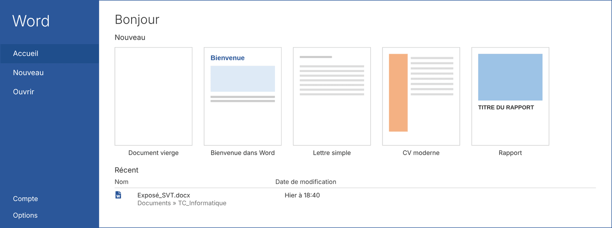
Figure 1 : L'écran d'accueil de Word 2019.
2.2 La fenêtre de Word 2019
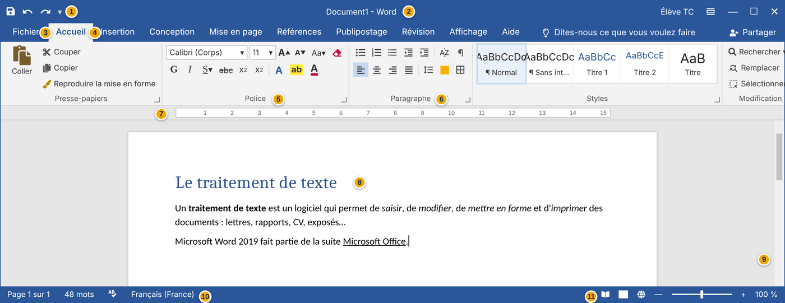
Figure 2 : Les éléments de la fenêtre de Word 2019.
| N° | Élément | Rôle |
|---|---|---|
| 1 | Barre d'outils Accès rapide | Commandes fréquentes : Enregistrer, Annuler, Rétablir ; personnalisable. |
| 2 | Barre de titre | Affiche le nom du document puis « Word » (Document1 tant qu'il n'est pas enregistré). |
| 3 | Onglet Fichier | Ouvre le mode Backstage : Nouveau, Ouvrir, Enregistrer, Enregistrer sous, Imprimer, Exporter, Fermer. |
| 4 | Onglets du ruban | Accueil, Insertion, Conception, Mise en page, Références, Publipostage, Révision, Affichage, Aide. |
| 5 | Ruban et groupe Police | Le ruban regroupe les commandes de l'onglet actif en groupes (Presse-papiers, Police, Paragraphe, Styles…). |
| 6 | Lanceur de boîte de dialogue | Petite flèche ⌟ en bas à droite d'un groupe : ouvre la boîte de dialogue complète (ex. Paragraphe). |
| 7 | Règle | Indique les marges et permet de régler les retraits et les tabulations (Affichage › Règle). |
| 8 | Zone de saisie et point d'insertion | Page où l'on tape le texte ; la barre verticale clignotante indique où le texte va s'écrire. |
| 9 | Barre de défilement | Permet de se déplacer dans un document long. |
| 10 | Barre d'état | Numéro de page, nombre de mots, état de l'orthographe, langue. |
| 11 | Modes d'affichage et zoom | Mode Lecture, Page, Web ; curseur de zoom (Ctrl + molette). |
2.3 Les onglets du ruban
| Onglet | Contenu principal |
|---|---|
| Accueil | Presse-papiers (couper, copier, coller), Police, Paragraphe, Styles, Rechercher/Remplacer |
| Insertion | Pages, Tableaux, Images, Formes, Icônes, SmartArt, En-tête/Pied de page, Numéro de page, Zone de texte, WordArt, Symboles |
| Conception | Thèmes, styles du document, Filigrane, Couleur de page, Bordures de page |
| Mise en page | Marges, Orientation, Taille, Colonnes, Sauts, Retraits et Espacement, Habillage |
| Références | Table des matières, notes de bas de page, citations |
| Révision | Grammaire et orthographe, Nombre de mots, Commentaires, Suivi des modifications |
| Affichage | Modes d'affichage, Règle, Quadrillage, Zoom, Fenêtres |
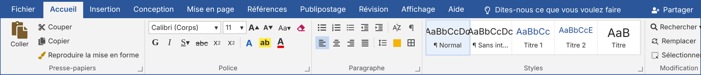
Figure 3 : L'onglet Accueil et ses groupes.
Remarque : Astuces
- Double-cliquer sur un onglet masque ou affiche le ruban (Ctrl + F1).
- Les onglets contextuels (Format de l'image, Création de tableau…) n'apparaissent que lorsqu'un objet est sélectionné.
- La zone « Dites-nous ce que vous voulez faire » permet de trouver une commande en tapant son nom.
2.4 Gérer ses documents
| Action | Méthode | Raccourci |
|---|---|---|
| Nouveau document | Fichier › Nouveau › Document vierge | Ctrl + N |
| Ouvrir | Fichier › Ouvrir › Parcourir | Ctrl + O |
| Enregistrer | Fichier › Enregistrer (ou icône disquette) | Ctrl + S |
| Enregistrer sous | Fichier › Enregistrer sous › Parcourir : choisir dossier, nom et type | F12 |
| Exporter en PDF | Fichier › Exporter › Créer PDF/XPS, ou Enregistrer sous › type PDF | — |
| Fermer le document | Fichier › Fermer | Ctrl + W |
Attention : Enregistrer souvent !
- Le premier enregistrement ouvre la boîte « Enregistrer sous » : on choisit l'emplacement (dossier), le nom du fichier et le type (.docx).
- Ensuite, Ctrl + S met à jour le fichier. Une coupure de courant fait perdre tout ce qui n'a pas été enregistré.
3. Élaboration d'un document
Élaborer un document se fait en cinq étapes : la saisie, la mise en forme, l'insertion d'objets, la mise en page puis l'impression.
3.1 La saisie
Règles de saisie :
- Ne jamais appuyer sur Entrée en fin de ligne : Word passe automatiquement à la ligne suivante (retour à la ligne automatique). La touche Entrée sert uniquement à créer un nouveau paragraphe.
- Une seule espace entre deux mots. Ne pas utiliser d'espaces pour centrer ou aligner du texte : on utilise les commandes d'alignement.
- Ponctuation française : pas d'espace avant le point et la virgule ; une espace avant et après « : ; ! ? ».
- Saisir d'abord tout le texte, puis le mettre en forme.
| Touche | Rôle |
|---|---|
| Entrée ↵ | Termine un paragraphe et en commence un nouveau |
| Retour arrière ⌫ | Efface le caractère à gauche du point d'insertion |
| Suppr | Efface le caractère à droite du point d'insertion |
| Maj ⇧ | Écrit une majuscule ou le caractère du haut d'une touche |
| Verr Maj ⇪ | Bloque l'écriture en majuscules |
| Alt Gr | Écrit le 3e caractère d'une touche (@, #, €, [ ], { }…) |
| Tab ↹ | Insère une tabulation (décalage aligné) |
| Maj + Entrée | Retour à la ligne sans changer de paragraphe |
| Ctrl + Entrée | Saut de page |
Afficher les marques de mise en forme (bouton ¶ de l'onglet Accueil, Ctrl + Maj + 8) permet de voir les espaces (·), les paragraphes (¶) et les tabulations (→).
Sélectionner du texte
| Pour sélectionner… | Méthode |
|---|---|
| Un mot | Double-clic sur le mot |
| Une ligne | Clic dans la marge gauche, en face de la ligne |
| Un paragraphe | Triple-clic dans le paragraphe (ou double-clic dans la marge) |
| Une phrase | Ctrl + clic dans la phrase |
| Une zone quelconque | Glisser avec la souris, ou Maj + flèches |
| Tout le document | Ctrl + A |
Corriger et modifier
| Commande | Raccourci | Rôle |
|---|---|---|
| Annuler / Rétablir | Ctrl + Z / Ctrl + Y | Revenir en arrière / refaire l'action annulée |
| Couper, Copier, Coller | Ctrl + X, Ctrl + C, Ctrl + V | Déplacer ou dupliquer du texte |
| Rechercher | Ctrl + F | Trouver un mot (volet Navigation) |
| Remplacer | Ctrl + H | Remplacer un mot par un autre dans tout le document |
| Grammaire et orthographe | F7 | Vérifier tout le document (onglet Révision) |
À retenir : Les soulignements de Word
- Souligné ondulé rouge : faute d'orthographe probable (mot inconnu du dictionnaire).
- Double soulignement bleu : erreur de grammaire ou de style probable.
- Clic droit sur le mot souligné : Word propose des corrections.
3.2 La mise en forme
Mettre en forme, c'est modifier l'apparence du texte pour le rendre lisible et agréable. Il faut toujours sélectionner le texte avant d'appliquer une mise en forme.
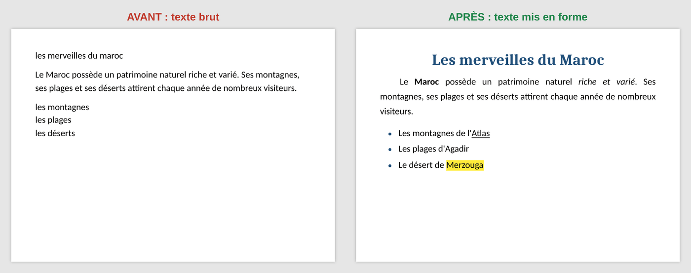
Figure 4 : Le même texte avant et après mise en forme.
a) Mise en forme des caractères (Accueil › groupe Police)
| Commande | Raccourci | Exemple |
|---|---|---|
| Police (type de caractères) | Ctrl + Maj + P | Calibri, Times New Roman, Arial… |
| Taille | Ctrl + Maj + > / < | 11, 14, 24 points |
| Gras | Ctrl + G | texte en gras |
| Italique | Ctrl + I | texte en italique |
| Souligné | Ctrl + U | texte souligné |
| Barré | — | texte barré |
| Indice / Exposant | Ctrl + = / Ctrl + Maj + + | H₂O / x² |
| Modifier la casse | Maj + F3 | minuscules, MAJUSCULES, 1re lettre… |
| Couleur de police / surlignage | — | texte en couleur, texte surligné |
| Effacer la mise en forme | Ctrl + Espace | revient au texte normal |
Le lanceur du groupe Police (Ctrl + D) ouvre la boîte de dialogue Police, qui regroupe tous ces réglages avec un aperçu.
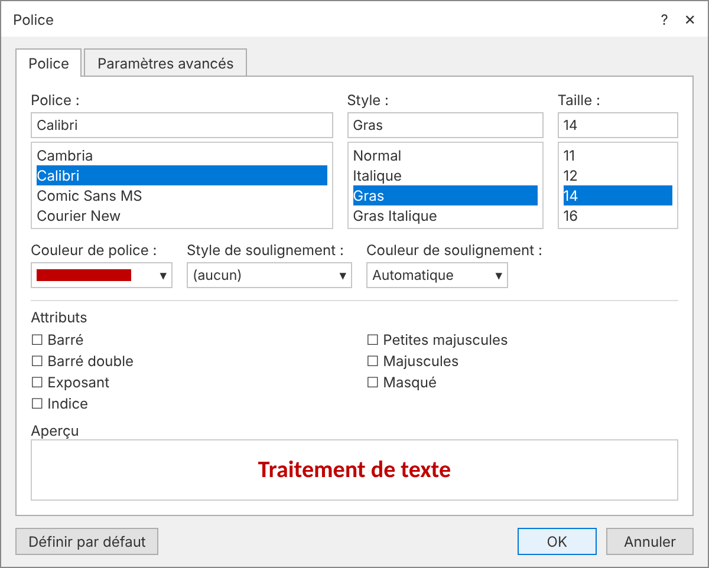
Figure 5 : La boîte de dialogue Police.
b) Mise en forme des paragraphes (Accueil › groupe Paragraphe)
| Réglage | Options et raccourcis |
|---|---|
| Alignement | À gauche (Ctrl + Maj + G), Centré (Ctrl + E), À droite (Ctrl + Maj + D), Justifié (Ctrl + J) |
| Retraits | Gauche, droit, première ligne (alinéa), suspendu : décalage du paragraphe par rapport aux marges |
| Interligne | Espace entre les lignes : 1 ; 1,15 ; 1,5 ; 2 … |
| Espacement | Espace avant et après le paragraphe (en points) |
| Puces et numérotation | Listes à puces (•, ✓, ➢) ou numérotées (1., a), I.) |
| Bordures et trame | Encadrer un paragraphe ou lui appliquer une couleur de fond |
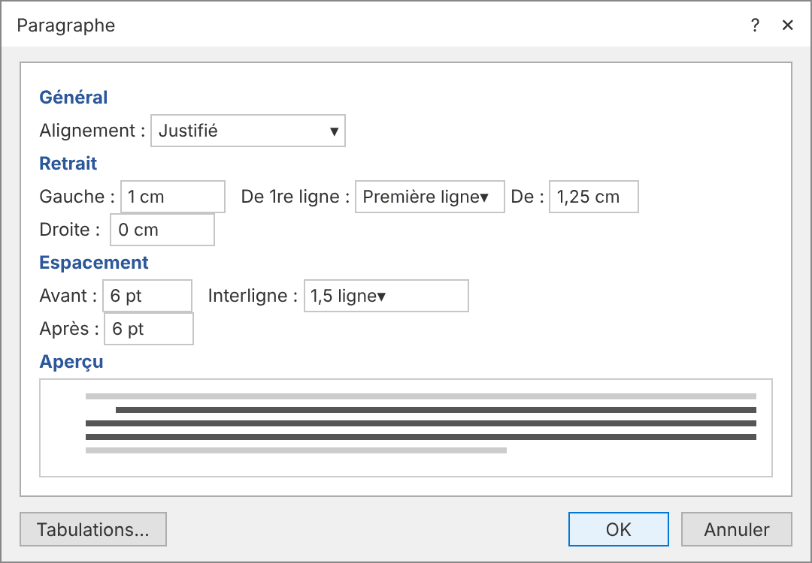
Figure 6 : La boîte de dialogue Paragraphe.
c) Outils pratiques
- Reproduire la mise en forme (pinceau) : copie la mise en forme d'un texte vers un autre. Double-clic sur le pinceau pour l'appliquer plusieurs fois.
- Styles (Normal, Titre 1, Titre 2…) : mise en forme prédéfinie à appliquer d'un clic ; ils servent aussi à créer une table des matières automatique.
- Lettrine (Insertion › Lettrine) : grande première lettre au début d'un paragraphe.
3.3 L'insertion d'objets (onglet Insertion)
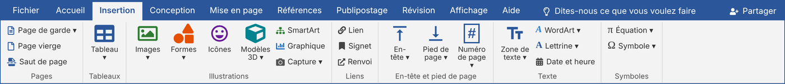
Figure 7 : L'onglet Insertion.
| Objet | Comment l'insérer |
|---|---|
| Image | Insertion › Images › Cet appareil (fichier de l'ordinateur) ou Images en ligne |
| Forme | Insertion › Formes : choisir la forme puis la tracer en glissant |
| Icônes / SmartArt | Insertion › Icônes ; Insertion › SmartArt (organigrammes, cycles, listes graphiques) |
| Tableau | Insertion › Tableau : glisser sur la grille (ex. 3 × 4) ou Insérer un tableau… |
| Zone de texte | Insertion › Zone de texte › Dessiner une zone de texte |
| WordArt | Insertion › WordArt : texte décoratif |
| Symbole / Équation | Insertion › Symbole (©, €, ♥, α…) ; Insertion › Équation |
| En-tête / Pied de page | Insertion › En-tête ou Pied de page : texte répété sur chaque page ; double-clic dans le corps pour sortir |
| Numéro de page | Insertion › Numéro de page › Bas de page |
Quand un objet est sélectionné, un onglet contextuel apparaît (Format de l'image, Format de la forme, Création de tableau, Disposition…) pour le modifier : taille, styles, bordure, rotation, rognage.
Tableaux
- Se déplacer d'une cellule à la suivante : touche Tab (Maj + Tab pour revenir).
- Insérer une ligne ou une colonne : clic droit › Insérer, ou onglet Disposition.
- Fusionner des cellules : sélectionner les cellules › clic droit › Fusionner les cellules.
- Mettre en forme : onglet Création de tableau › Styles de tableau, Trame de fond, Bordures.
Habillage du texte
L'habillage définit la position du texte autour d'une image ou d'une forme (Format de l'image › Habillage, ou bouton Options de disposition à côté de l'image).
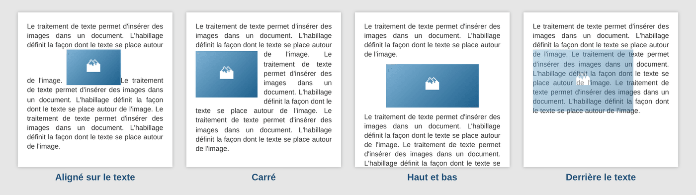
Figure 8 : Quelques types d'habillage du texte.
3.4 La mise en page (onglet Mise en page)
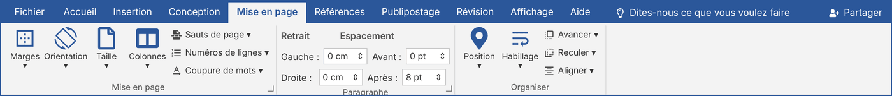
Figure 9 : L'onglet Mise en page.
| Réglage | Rôle et valeurs courantes |
|---|---|
| Marges | Espaces blancs autour du texte : Normales (2,5 cm), Étroites, Larges, Personnalisées |
| Orientation | Portrait (vertical) ou Paysage (horizontal) |
| Taille | Format du papier : A4 (21 × 29,7 cm), A5, Letter… |
| Colonnes | Une, deux, trois colonnes (style journal) |
| Sauts | Saut de page (Ctrl + Entrée), saut de colonne, saut de section |
| Retrait et espacement | Réglages rapides du paragraphe sélectionné |
Dans l'onglet Conception, le groupe Arrière-plan de la page propose : Filigrane (texte en transparence, ex. « CONFIDENTIEL »), Couleur de page et Bordures de page.
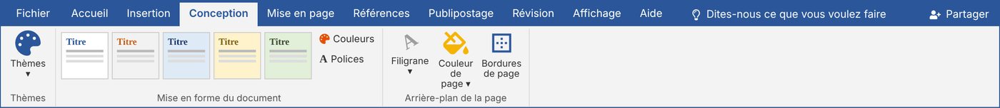
Figure 10 : L'onglet Conception.
3.5 L'impression
Avant d'imprimer, on vérifie toujours l'aperçu pour éviter de gaspiller du papier et de l'encre. Fichier › Imprimer (Ctrl + P) affiche à la fois les paramètres et l'aperçu.
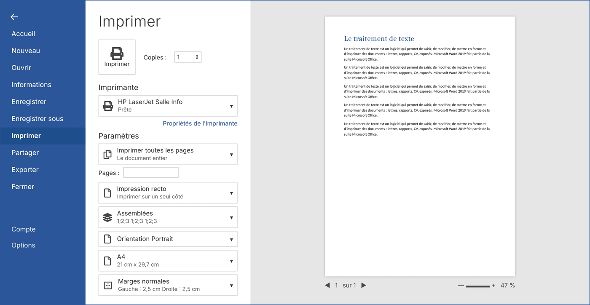
Figure 11 : Fichier › Imprimer : paramètres et aperçu.
| Paramètre | Rôle |
|---|---|
| Copies | Nombre d'exemplaires à imprimer |
| Imprimante | Choix de l'imprimante (ou « Microsoft Print to PDF ») |
| Pages | Toutes les pages, page active, ou pages précises : « 1-3 » (de 1 à 3), « 1;4 » (pages 1 et 4) |
| Recto / Recto verso | Impression sur un ou deux côtés de la feuille |
| Assemblées | Ordre des pages lorsqu'il y a plusieurs copies |
| Orientation, taille, marges | Derniers réglages de la mise en page |
À retenir : Les étapes d'élaboration
Saisir → 2. Mettre en forme → 3. Insérer des objets → 4. Mettre en page → 5. Vérifier l'aperçu et imprimer.
Et à chaque étape : enregistrer (Ctrl + S) !